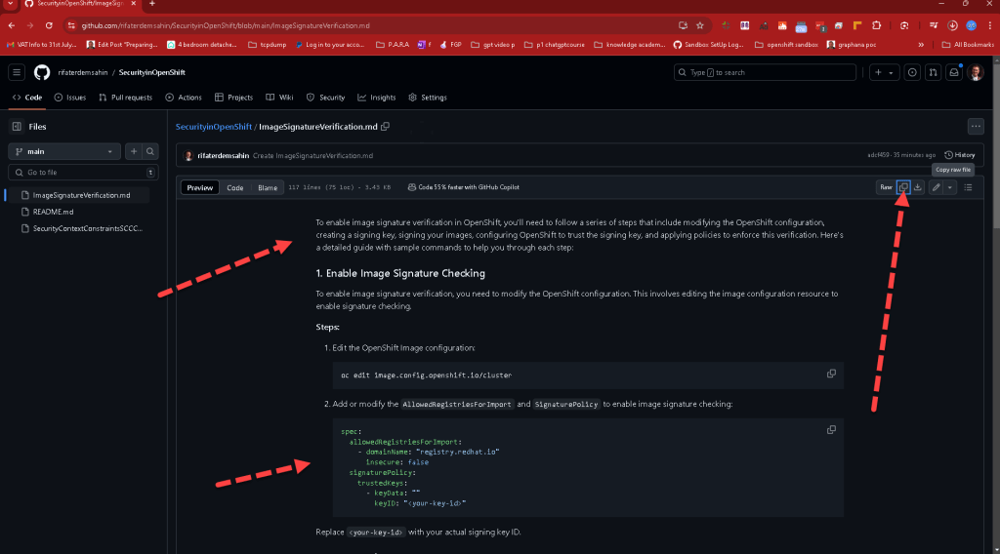

Why Use the "Copy Raw" Feature in GitHub and Add It to Your Memory Cards in Slide Notes: A Guide to Efficient Learning with Symbol Databases

In the world of coding and software development, efficiency and precision are key. Tools that help streamline the learning process and improve retention of complex information are invaluable. One such tool is the "Copy Raw" feature in GitHub, a popular platform for version control and collaboration. This blog post will explain why using the "Copy Raw" feature in GitHub and adding the copied content to your memory cards in slide notes is a powerful strategy, especially when working with symbol databases.
What is the "Copy Raw" Feature in GitHub?
GitHub's "Copy Raw" feature allows users to copy code or text exactly as it appears in the repository, without any additional formatting or GitHub-specific styling. This feature is particularly useful for developers and learners who need to copy and paste code snippets, configuration files, or any other text in its purest form, ensuring no hidden characters or formatting issues that might interfere with code execution or learning.
Benefits of Using the "Copy Raw" Feature
-
Preserve Code Formatting and Integrity: When you use the "Copy Raw" feature, you ensure that the code or text you are copying retains its exact formatting and content. This is crucial for coding, as even a small formatting error or hidden character can lead to bugs or syntax errors. By using this feature, you avoid these potential pitfalls, making it easier to study and replicate code correctly.
-
Efficiently Transfer Complex Data: Many programming languages and scripts use a variety of symbols, special characters, and syntax that need to be preserved to function correctly. The "Copy Raw" feature allows you to transfer this complex data accurately to other documents or platforms, such as your notes or a symbol database.
-
Simplifies Learning and Revision: By copying code and notes exactly as they appear in the repository, you create a consistent reference for study. This consistency is especially helpful when creating memory cards or slide notes for revision, as it reduces the cognitive load of translating between different formats or correcting errors introduced by automatic formatting.
Integrating the "Copy Raw" Feature with Memory Cards in Slide Notes
Memory cards, or flashcards, are a proven method for enhancing memory retention through active recall and spaced repetition. When combined with slide notes — a format often used for quick reference and study — memory cards become even more powerful. Here’s how integrating the "Copy Raw" feature from GitHub into your memory cards can enhance your learning experience:
-
Accurate Representation of Code Snippets and Syntax: By using the "Copy Raw" feature to add code snippets to your memory cards, you ensure that each piece of code is accurately represented. This is particularly useful when memorizing syntax, learning new programming languages, or studying complex algorithms.
-
Building a Symbol Database: A symbol database is a collection of symbols, characters, or unique syntax that you frequently encounter in your coding projects. By using the "Copy Raw" feature, you can easily compile these symbols and their meanings or functions into a comprehensive database. This database can be linked to your memory cards in slide notes, providing a quick reference guide to look up any unfamiliar symbols while coding.
-
Facilitates Quick Review and Repetition: Memory cards in slide notes format allow for quick review and repetition, which are essential for mastering complex topics. By having accurate and raw copies of your code and symbols, you can more effectively quiz yourself and reinforce your learning.
How to Use the "Copy Raw" Feature with Memory Cards and Slide Notes
-
Identify Key Code Snippets and Symbols: As you study or work on coding projects, identify key code snippets and symbols that you need to remember or understand better.
-
Use the "Copy Raw" Feature: Navigate to the relevant file in your GitHub repository, use the "Copy Raw" feature to copy the exact code or text without any formatting.
-
Paste into Memory Cards and Slide Notes: Paste the copied content directly into your memory cards and slide notes. Ensure that each card or slide clearly defines the context and purpose of the code or symbol.
-
Organize into a Symbol Database: As you build up a collection of these memory cards, organize them into a symbol database. This database can be a physical notebook, a digital document, or a specialized app that allows for quick searching and referencing.
-
Regular Review and Practice: Regularly review your memory cards and refer to your symbol database to reinforce your learning. Use spaced repetition techniques to ensure that you’re reviewing the information at optimal intervals for long-term retention.
Conclusion
The "Copy Raw" feature in GitHub is a powerful tool for developers and learners alike. By using it to add accurate, unformatted code and text to your memory cards in slide notes, and creating a symbol database, you can enhance your study process, avoid common coding errors, and master complex topics more efficiently. Start integrating this technique into your learning strategy today and experience the benefits of precise, efficient study.
Imported from rifaterdemsahin.com · 2024